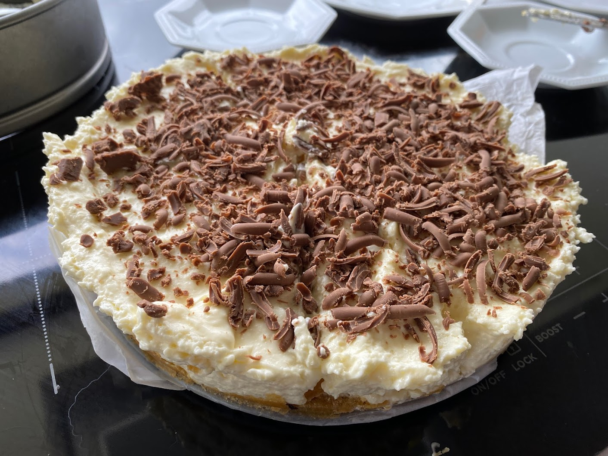

White Choc Cheesecake
Wheatland Christmas favourite

200gmilk arrowroot biscuits
Crush up milk arrowroot biscuits in a blender
75gmelted butter
Make base out of biscuits and melted butter
1 cupwhipped cream3/4 cupcastor sugar500gcream cheese
Mix together whipped cream castor sugar cream cheese
200gwhite chocolate chips
Melt and mix in white chocolate chips
2 tspgelatine1/4cupboiling water
Dissolve gelatine in boiling water and mix in
Put mix on top of base
a few rowsmilk chocolate
Grate milk chocolate on top